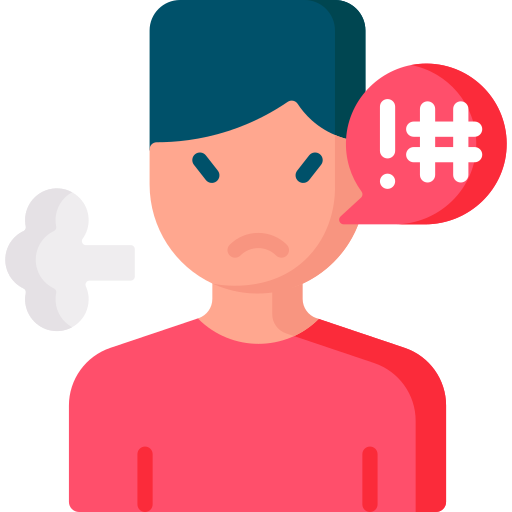
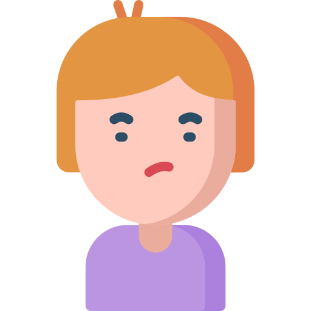
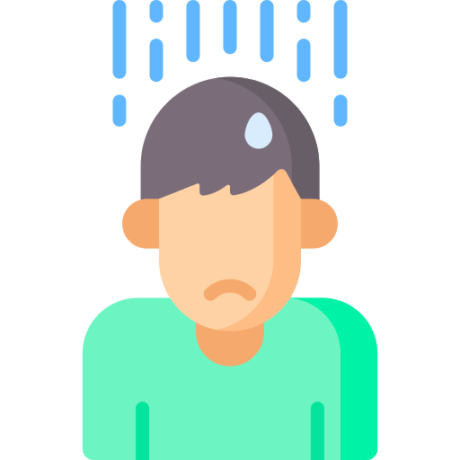
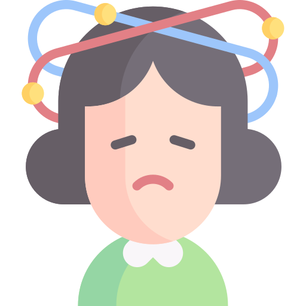
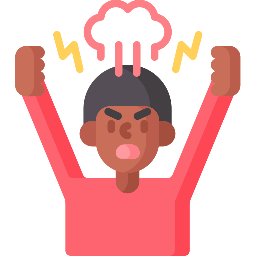

Você no controle das suas emoções para viver melhor.
É possível alcançar o equilíbrio emocional que te ajudará nos seus relacionamentos, no trabalho e na sua vida pessoal.
Como funciona a terapia
A terapia te guia para identificar e modificar pensamentos e comportamentos que causam desequilíbrio emocional e te impedem de ter a vida que você deseja.
Com base científica e comprovada eficácia, a Terapia Cognitivo-Comportamental (TCC) te ajuda a:
Gerenciar suas emoções com autonomia e construir uma vida melhor.
Eliminar pensamentos e comportamentos disfuncionais que geram
Alcançar seus objetivos com mais clareza e assertividade.
Sinais para cuidar da sua saúde mental
Cuidar da sua saúde mental é tão importante quanto cuidar do seu corpo físico. Fazer isso te ajuda a lidar com o estresse, se relacionar melhor com as pessoas e ter uma vida mais feliz.
Emoções
Sente-se constantemente sem motivação e cansado(a).
 Frequentemente entra em conflitos com outras pessoas.
 Se sente insegura, incapaz, insuficiente e tem muita timidez.
Comportamento
 Tem crises frequentes de tristeza, angústia e desesperança.
 Sente-se paralisado(a), sem foco e acaba procrastinando.
 Tem dificuldade de controlar as emoções e acaba explodindo.
Ana Carolina
Psicóloga
Conheça mais
Sobre mim!
Sou psicóloga com mais de 10 anos de experiência em atendimentos clínicos. Graduada em Psicologia pela Universidade Mackenzie, com aprimoramento em Psicologia Jurídica na PUC/SP, formação em Psicologia Analítica pelo Instituto Pieron, especialização em Psicologia Positiva na University of Pennsylvania, e pós-graduação em Neuropsicologia pelo Instituto de Ciências da Mente.
Depoimentos de Pacientes!
"Transformei minha vida em 2 anos com a ajuda da Dra. Ana Carolina!
De ansiosa e em luto, a mãe empoderada que aprecia o puerpério.
Com a Dra. Ana Carolina ao meu lado, superei desafios, cresci e amadureci em diversos aspectos. Sua competência, empatia e sensibilidade me guiaram nesse processo transformador.
Minha gratidão é imensa por tê-la encontrado!"
"Transformei caos em clareza com a Carol!
Do limite à paz interior, com a ajuda certa.
Cheguei à Carol exausta, sem saber lidar com meus problemas. Mas sua escuta atenta e acolhedora me guiou em um processo de cura e autoconhecimento.
Olhar para dentro doeu, mas valeu a pena!
Com o direcionamento e a humanidade da Carol, encontrei clareza onde antes só havia caos. Hoje, sou grata por ter encontrado essa profissional incrível."
"Do cursinho ao autoconhecimento, com a ajuda certa.
Comecei a terapia com a Ana buscando controlar a ansiedade e escolher um curso. Mas descobri que era muito mais do que isso!
Um espaço seguro para me abrir e me conhecer.
Desde a primeira sessão, a Ana me transmitiu confiança e me acolheu. Hoje, consigo me entender melhor, identificar meus anseios e gatilhos, e me aceitar como sou.
Um caminho que não preciso trilhar sozinha.
Com o apoio da Ana, sei que posso superar meus desafios e alcançar meus objetivos."
 Sente-se constantemente sem motivação e cansado(a).
Sente-se constantemente sem motivação e cansado(a)..png)